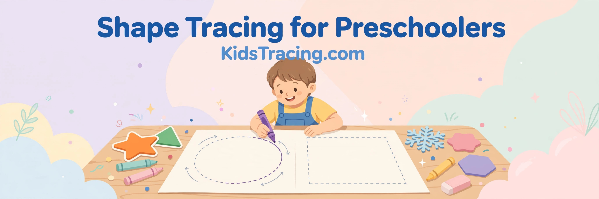
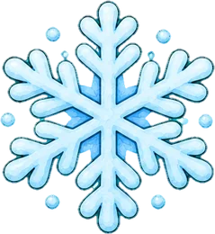

Shape Tracing for Preschoolers: Circles and Squares Come First

My daughter learned her shapes by tracing them before she could name them. She would trace a circle and call it a ball. She would trace a square and call it a box. The names came later. The hand learned first, and that order worked for her. I stopped teaching the names first and let the tracing do the teaching.
Circles come first because they are the kindest shape to trace. There are no corners to stop at and no sharp turns to get wrong. A circle is one smooth move that comes back to where it started. We traced around plates and cups before we traced a printed circle. A plate gives a big circle, and a big circle forgives a wobbly hand. Then we moved to smaller circles on paper. Then to the arms of a snowflake, which are really lines that meet in the middle, with a small circle in the center. She liked that one, so we did it twice.

Squares come next. A square has four straight sides and four corners, and the corners teach something a circle never teaches. The hand has to stop, turn, and start again. That stop and turn is the same move a child needs for most capital letters. I tell her to pause at each corner and take a breath. It sounds silly, but it works. The corners get sharper, and the square starts to look like a square instead of a round blob. A square also gives a clear win. When all four sides meet up, the shape is closed, and she can see that she did it.
Triangles and stars come after squares. A triangle has three sides, and the point at the top is narrow, so the hand has to be careful there. A star is harder still, with points that go in and out. I do not hand her a star on day one. I hand her a star after a week of squares, when her hand knows how to stop and turn. If the star comes out lopsided, that is fine. A lopsided star traced by a four-year-old is still a star, and she knows it.
The game that made shapes stick was finding them in the room. After she traced a circle, I asked her to find a circle in the kitchen. The clock was a circle. Her plate was a circle. Squares were next, and we found them in the windows and in her books. The triangle came last, and we found one in a slice of pizza. That game kept her going longer than any sheet on its own would have. It also made her look at the world in a new way. She started pointing out shapes on the walk to the park, which told me the tracing had done its job.
Shadow matching pairs well with shape tracing: https://kidstracing.com/blog/shadow-matching-activities/ The article on KidsTracing has 8 easy ideas, and the simplest one is matching a shape to its shadow. A circle shadow looks like a circle. A square shadow looks like a square. A child who has traced a shape can spot its shadow fast, and that small win builds confidence for the next sheet. We do shadow matching on days when the pencil feels like too much. It uses the same skills, and it feels like a game instead of work.
In winter we traced snowflakes from the clipart hub: https://kidstracing.com/clipart/ which has watercolor PNG bundles with transparent backgrounds. A snowflake is a good shape to trace because it is made of straight lines that cross in the middle. The seasonal pages: https://kidstracing.com/free-printables/seasonal/ have winter pages, so we had fresh sheets to print when the snow started. The preschool tracing sheets: https://kidstracing.com/blog/preschool-tracing-sheets/ on KidsTracing are written for 4-year-olds, and they are a good next step once circles and squares feel easy. Everything there is free with no sign-up.
I keep sessions short. One shape per sheet, and one or two sheets per sitting. A sheet should have one job, which is one shape traced well. If a page tries to teach three shapes at once, she loses interest halfway through. I print a few and leave them on the table, and she picks the one she likes. Some days it is a circle. Some days it is a star. I stopped fighting that. The point is the pencil in her hand, not which shape she picks.
Shapes look basic, and they are. That is why they work. A child who can trace a circle and a square has the hand control for letters and numbers. The letters come next, and they come easier when the shapes came first.
Free printables mentioned in this article
- Preschool Tracing Sheets: https://kidstracing.com/blog/preschool-tracing-sheets/
- Shadow Matching Activities: https://kidstracing.com/blog/shadow-matching-activities/
- Free Clipart: https://kidstracing.com/clipart/
- Seasonal Printables: https://kidstracing.com/free-printables/seasonal/
All of the printables above are free, with no sign-up.